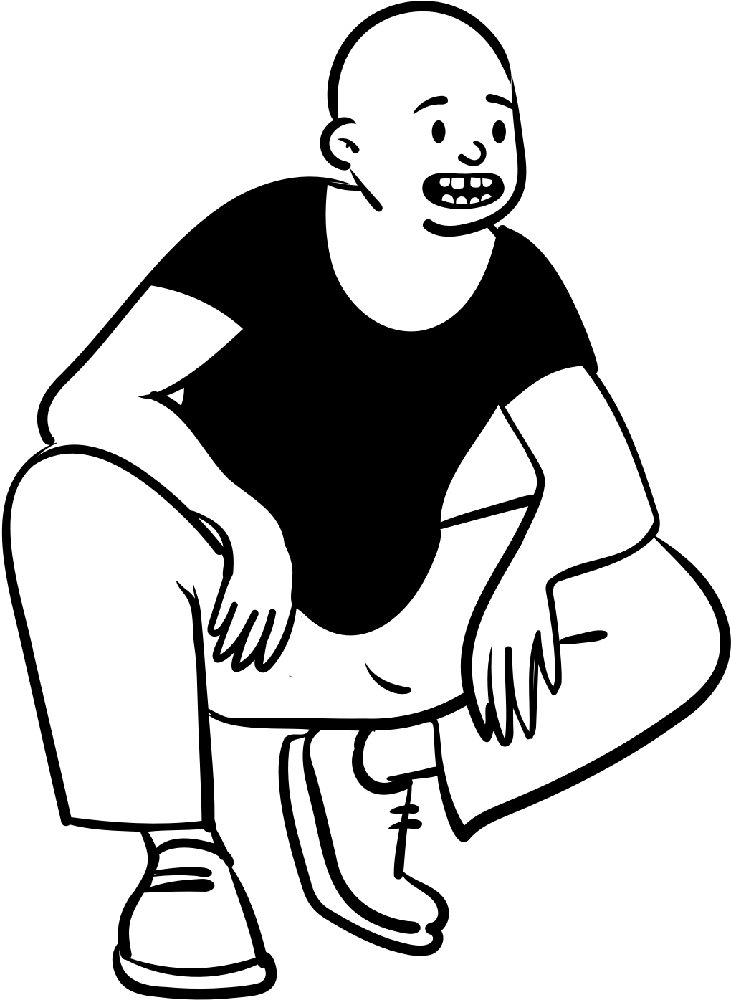
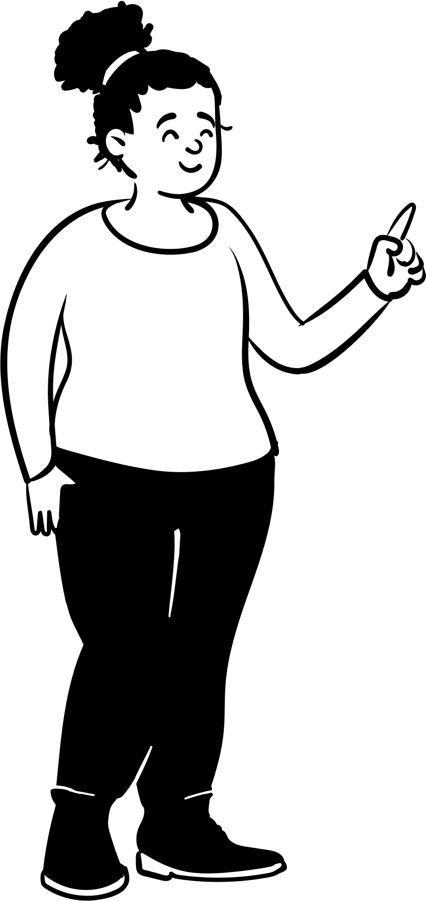
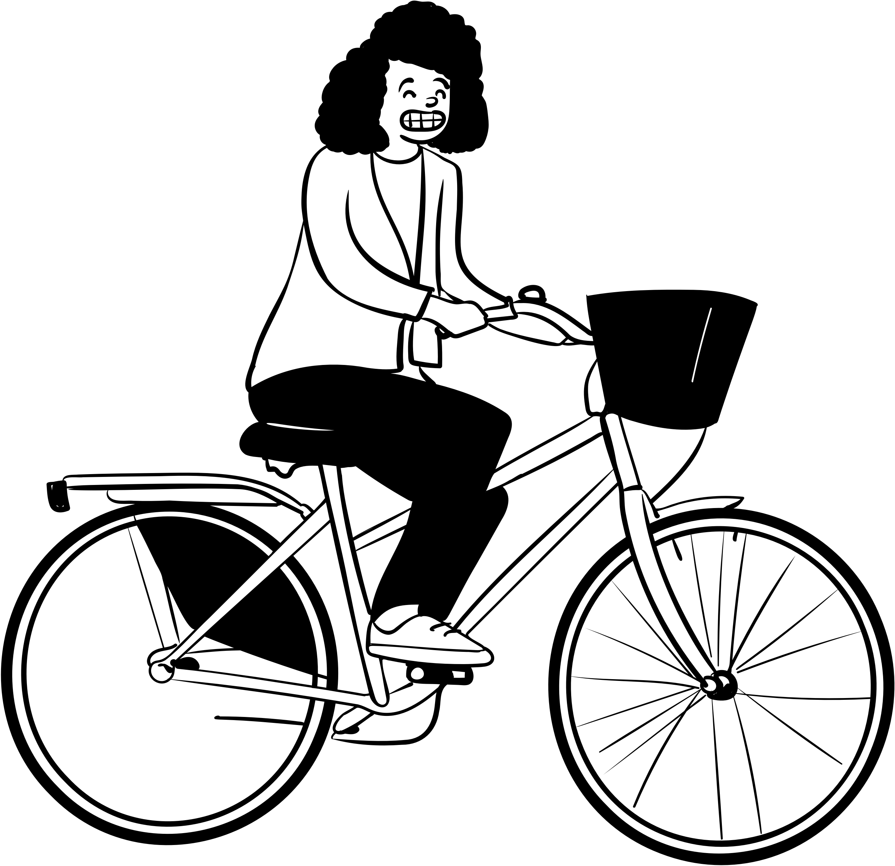
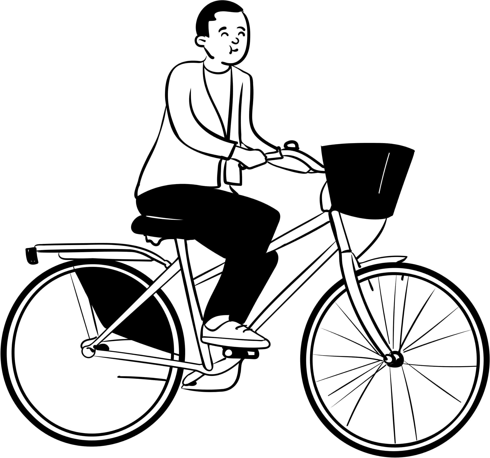

Welcome to The Library
Comprehensive Linux SCP&SSH Cheatsheet.
ssh-keygen examples.
we need it!



SCP & SSH usage
SCP Linux – Securely Copy Files Using SCP examples
SCP examples
Copy file from local host to a remote host SCP example:
$ scp file.txt username@to_host:/usr/directory/
Copy directory from local host to a remote hos SCP example:
$ scp -r /usr/directory/ username@to_host:/usr/directory/

If You Linux Creating an SSH Key Pair
$ scp -i /Users/directory/file -r /usr/directory/ username@to_host:/usr/directory/
WARNING: /Users/directory/file is SSH private key!!!!!!!!!
SCP options:
–r: Recursively copy entire directories. Note that this follows symbolic links encountered in the tree
traversal.
-C: Compression enable. Passes the -C flag to ssh to enable compression.
-l: limit – Limits the used bandwidth, specified in Kbit/s.
-o: ssh_option – Can be used to pass options to ssh in the format used in ssh_config.
-P: port – Specifies the port to connect to on the remote host. Note that this option is written with a capital
‘P’.
-p: Preserves modification times, access times, and modes from the original file.
-q: Quiet mode: disables the progress meter as well as warning and diagnostic messages from ssh.
-v: Verbose mode. Print debugging messages about progress. This is helpful in debugging connection,
authentication, and configuration problems.
Usage: SSH [-B bind_interface]
[-b bind_address] [-c cipher_spec] [-D [bind_address:]port]
[-E log_file] [-e escape_char] [-F configfile] [-I pkcs11]
[-i identity_file] [-J [user@]host[:port]] [-L address]
[-l login_name] [-m mac_spec] [-O ctl_cmd] [-o option] [-p port]
[-Q query_option] [-R address] [-S ctl_path] [-W host:port]
[-w local_tun[:remote_tun]] destination [command]

SSH Keys and Public Key Authentication,SSH Key Pair
The SSH protocol uses public key cryptography for authenticating hosts and users.
The authentication keys, called SSH keys, are created using the keygen program.
The simplest way to generate a key pair is to run ssh-keygen without arguments.
In this case, it will prompt for the file in which to store keys.
$ ssh -p 22 -i /Users/directory/file username@to_host
WARNING: /Users/directory/file is SSH private key!!!!!!!!!
The CentOS Project
The CentOS Project is a community-driven free software effort focused on delivering a robust open source
ecosystem around a Linux platform.
CentOS